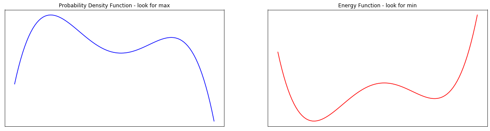
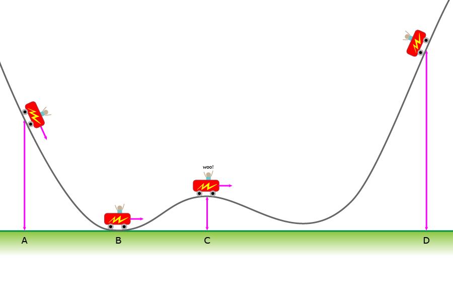
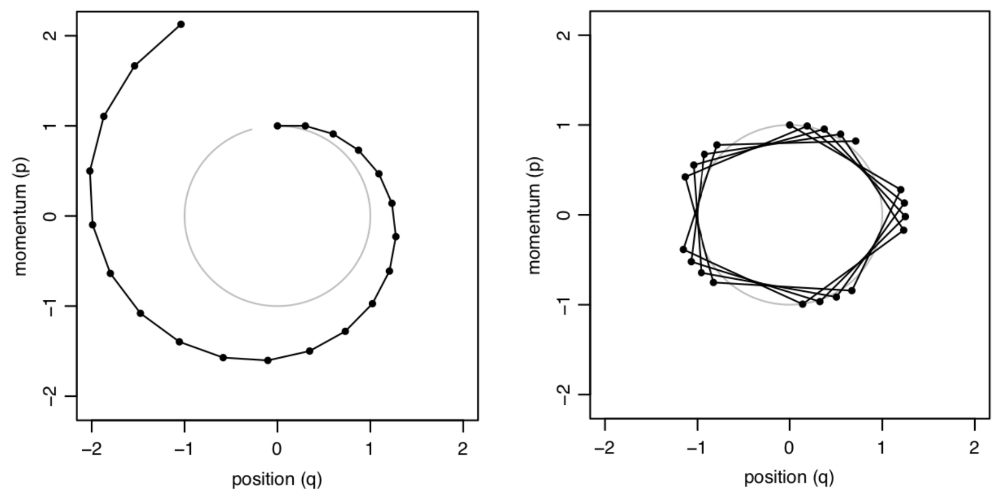
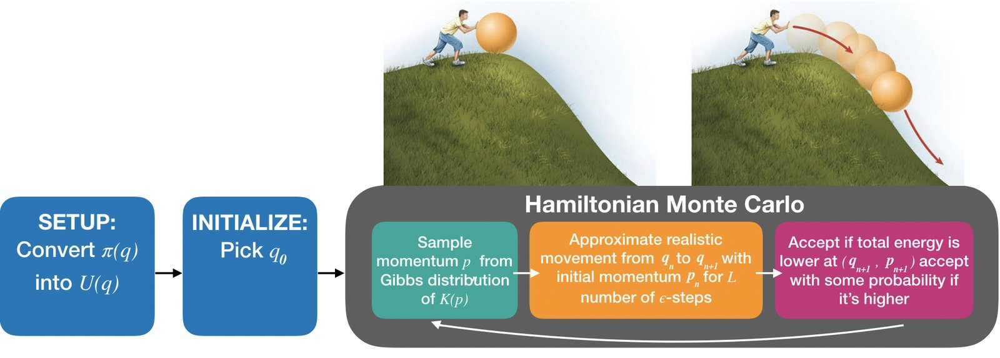

18. Hamiltonian Monte Carlo#
This chapter is adapted from AM207 (Harvard, Fall 2021). Watch the recorded lecture.
In this chapter
Hierachical Generalized Linear Models
Sampling as Optimization
Hamiltonian Monte Carlo
18.1. Hierarchical Generalized Linear Models#
Generalized Linear Models#
We can add covariates to all the other common statistical models of data \(Y^{(n)} \sim p(Y^{(n)}|\theta^{(n)})\)!
The general scheme is:
Set \(\mathbb{E}[Y^{(n)}] = \theta^{(n)} = g(\mathbf{w}^\top \mathbf{X}^{(n)})\), where \(g\) is typically a non-linear function called the link function
Note: in literature, \(g^{-1}\) is called the link function.
Set the variance according to how the variance of \(p(Y^{(n)}|\theta^{(n)})\) depends on \(\theta\), \(\mathrm{Var}[Y^{(n)}] = \phi f(\theta^{(n)})\), where \(\phi\) is a constant.
These models are called generalized linear models. Logistic regression is so called because \(g^{-1}\) is the logistic function.
Kidney Cancer Dataset: Pooling vs Fully Independent Estimation#
Rather than modeling the total incidents of kidney cancer, we collect information for each individual in each county. We can explain how the cancer rate depends on demogaphics.
2. \(\mathbf{X}^{(n)}\) include income, level of education, access to preventative care, cost of living etc
3. \(\theta^{(n)}\) is the underlying cancer rate for the \(n\)-th individual.
Pooled Estimation: In the above model, we pooled the data across all counties. We implicitly assume that the cancer rate \(\theta^{(n)}\) depends on demographic factors \(\mathbf{X}\) in the same way for every individual.
Kidney Cancer Dataset : Hierachical vs Non-Hiearchical Models#
Bayesian Model: Instead of assuming that the cancer rates in differen counties are fully independent. We can assume that the rates are similar but differ from each other stochastically.
where \(\phi\) is the set of hyperparameters of this model (i.e. you have to specify it). The prior \(p(\mathbf{w} | \phi)\) expresses our belief that \(\theta^{(n, c)}\)’s are similar.
Hierachical Model: Rather than choosing \(\phi\) arbitrarily, we can infer \(\phi\) from the data by putting a prior on it.
A Hierarchical Generalized Linear Model for Kidney Cancer#
If we wanted to build an explanatory model for the regional differences in how cancer rate depends on demographic factors, we might want to consider a hierarchical generalized linear model as below:
The key object of interest for this model is the posterior
Since there is no closed for this posterior, we must sample from it.
Question: Should we expect that sampling from the posterior of these hierarchical models to be easy? What happened with your sampler in the Chapter 13 problem set?
18.2. Sampling as Optimization#
When is Metropolis Hastings Efficient?#
Come up with a rule for what kinds of proposals get accepted. How many proposals will generally satisfy this rule?
When is Metropolis Hastings Inefficient?#
Come up with a rule for what kinds of proposals get accepted. How many proposals will generally satisfy this rule?
The Connection Between Energy and Density Functions#
In simulated annealing we turn the objective function \(U(q)\) into a pdf \(\pi(q)\), but with higher mass where \(U\) has lower values. This is the Gibbs distribution:
where \(Z\) is the normalizing constant of the exponential part. The Gibbs distribution has a physical interpretation: \(\pi(q)\) is the likelihood of being in state \(q\) given the energy \(U(q)\) of state \(q\) and the temperature \(T\). For now, we set \(T=1\).
Using the same relationship, we can turn a probability distribution into an energy function
Motto: negative gradient of the energy function points to the direct of steepest decrease in \(U\) and the steepest increase in \(\pi\).
The Connection Between Optimization and Sampling#
If we wanted to sample from high density regions of \(\pi\), why don’t we turn \(\pi\) into an energy function \(U(q) = - \log \pi(q)\) and use gradient descent to find the valleys of \(U\) (and hence modes of \(\pi\))?
Why isn’t gradient descent on \(U\) a valid way to sample from \(\pi\)?
fig, ax = plt.subplots(1, 2, figsize=(20, 5))
ax = plot_energy_gibbs(f, x, ax)
plt.show()

Gradient Descent with Random Momentum: Simulating Mechanics of Moving Particles#
To randomly sample from \(\pi\) we need to perform gradient-baesed descent on \(U\) with some randomness to make sure we move around. But we need to make sure this randomness is controlled (i.e. doesn’t overwhelm the information in the gradient).
What if we performed gradient descent with an initial random momentum? That is, we simulated the way a particle with mass would move on the graph of \(U\) if we started its motion with a push (an intitial direction and magnitude of force):
I. at first, the particle would tend to travel in the direction of the initialization
II. eventually, gravity will pull it towards the minima (it will perform gradient descent)


Sampling by Physical Simulation#
We can now sketch a sampler of \(\pi\) based on the simulations physical explorations of the graph of it’s energy function \(U\):
start at a random \(q\), pick a mass \(M\)
repeat:
start at the current sample \(q_{\text{current}}\)
pick a random momentum vector (random direction and magnitude of force)
simulate, for a period of \(T\) seconds, the movement of a particle with mass \(M\) moving on the graph of \(U\) with this momentum
the \(q\)-coordinate(s) of where the particle lands at the \(T\)-th second is the new sample \(q_{\text{new}}\)
set \(q_{\text{current}}\leftarrow q_{\text{new}}\)

18.3. Hamiltonian Monte Carlo#
Hamiltonian Motion as Differential Equations#
What does it mean to simulate the movement of a particle on the graph of \(U\)? It means to exchange potential energy (height) with kinetic energy (related to speed) in a way that obeys the conservation of total energy.
A physical properties of system with position \(q(t)\) and momentum \(p(t)\) is described by a function \(H(q, p)\) called the Hamiltonian. We will always choose a Hamiltonian that decomposes as the sum of potential and kinetic energy as follows:
Say the system is at \((q_0, p_0)\) at time \(t=0\), the system’s state at time \(t = T\) is given by integrating the differential equations from \(t=0\) to \(t=T\) and solving for constants based on \(q(0) = q_0\), \(p(0) = p_0\). The map \(\phi(T)\) transforming the state \((q_0, p_0)\) to the state at \((q_T, p_T)\) is called the flow of the Hamiltonian system. The principle of conservation of total energy says that \(H(q, p)\) is constant along every point \(q_t, p_t\) on every flow.
Hamiltonian Monte Carlo: with Exact Integration#
Let \(\pi(q)\) be our target distribution with \(q\in \mathbb{R}^D\). We turn \(\pi\) into an energy function \(U(q)\) by \(U(q) = - \log(\pi(q))\). We choose a kinetic energy function \(K(p)\). We fix \(t = T\).
start with a random \(q^{(0)}\in\mathbb{R}^D\)
repeat:
(kick-off) sample a random momentum from the Gibbs distribution of \(K(p)\), i.e. \(p^{(current)} \sim \frac{1}{Z} \exp\{-K(p)\}\).
(simulate movment) simulate Hamiltonian motion for a time interval of length \(T\), i.e. start at \((q^{(current)}, p^{(current)})\) and find \((q^{(\text{time }T)}, p^{(\text{time }T)})\). You need to integrate \(\frac{dq}{dt} = \frac{\partial H}{\partial p}, \frac{dp}{dt} = -\frac{\partial H}{\partial q}\)!
accept \(q^{(current)}\) as a new sample: \(q^{(current)} \leftarrow q^{(\text{time }T)}\).
Questions: is this a correct way to sample from \(\pi\)? But isn’t the integration in Step B hard?
Correctness of HMC with Exact Integration#
Two important properties of Hamiltonian dynamics:
I. (Reversibility) The flow \(\phi(T)\) of a Hamiltonian system is one-to-one and onto for every interval length \(T\), i.e. given \((q^{(\text{time }T)}, p^{(\text{time }T)})\) we can compute the point of origin \((q^{(\text{time }0)}, p^{(\text{time }0)})\).
II. (Volume Preserving) It’s easy to verify that the vector field of a Hamiltonian system is divergence free, which will imply that the flow \(\phi(T)\) is volume preserving – if \(A\subset \mathbb{R}^D\) has volume \(V\) then the image of \(A\) under \(\phi(T)\) has volume \(V\).
The above two properties imply detailed balance for HMC with respect to the joint distribution (see readings):
Question: What about irreducibility and aperiodicity?
Approximating Flows: Sympletic Integrators#
Simulating Hamiltonian dynamics for a time period of length \(T\), using the flow \(\phi(T)\), requires that we integrate the equations in the Hamiltonian system with respect to \(t\),
discretizing the time period \([0, T]\) into \(L\) chunks each with length \(\epsilon\).
approximating the flow for a time period of length \(\epsilon\).
A common method of approximating the flow is called the leap-frog integrator. This integrator has the special property of being reversible and volume-preserving.
This means that replacing exact Hamiltonian dynmaics in HMC with the leap-frog integration will not obviously ruin detailed balance!
Approximating Flows: Adjusting for Error#
But the approximation is not exact! The longer the time period \(\epsilon\) the more error in the approximation. The more steps in your simulation (i.e. the longer \(T\) is) the more these errors will accumulate. To ensure the correctness of the sampling, we need to add a Metropolis-Hastings step so that we can potentially reject the sample from the approximation.


Hamiltonian Monte Carlo: with the Leap Frog Integrator#
Let \(\pi(q)\) be our target distribution with \(q\in \mathbb{R}^D\). We turn \(\pi\) into an energy function \(U(q)\) by \(U(q) = - \log(\pi(q))\). We choose a kinetic energy function \(K(p)\).
0. start with a random \(q^{(0)}\in\mathbb{R}^D\)
1. repeat:
\(\quad\)A. (kick-off) sample a random momentum from the Gibbs distribution of \(K(p)\), i.e.
\(p^{(current)} \sim \frac{1}{Z} \exp(-K(p))\).
\(\quad\)B. (simulate movement) simulate Hamiltonian motion for \(L\) steps each with time interval \(\epsilon\), using the leap-frog integrator.
\(\quad\)\(\quad\)a. Repeat for T - 1 times, for \(p^{(\text{step } 0)} = p^{(current)}\), \(q^{(\text{step } 0)} = q^{(current)}\):
\(\quad\)\(\quad\)\(\quad\)i. (half-step update for momentum) \(p^{(\text{step } t + 1/2)} \leftarrow p^{(\text{step } t)} - \epsilon/2 \frac{\partial U}{\partial q}(q^{(\text{step } t)})\)
\(\quad\)\(\quad\)\(\quad\)ii.* (full-step update for position) \(q^{(\text{step } t + 1)} \leftarrow q^{(\text{step } t)} + \epsilon \frac{\partial K}{\partial p}(p^{(\text{step } t + 1/2}))\)
\(\quad\)\(\quad\)\(\quad\)iii. (half-step update for momentum)\(p^{(\text{step } t + 1)} \leftarrow p^{(\text{step } t + 1/2)} - \epsilon/2 \frac{\partial U}{\partial q}(q^{(\text{step } t + 1)})\)
\(\quad\)\(\quad\)b. (reverse momentum) \(p^{(\text{step } T)} \leftarrow -p^{(\text{step } T)}\)
\(\quad\)C.(correction for simulation error) implement Metropolis-Hasting accept mechanism:
\(\quad\)\(\quad\)a. compute \(\alpha = \min\left(1, \exp\left\{H(q^{(current)}, p^{(current)}) - H(q^{(\text{step } T)}, p^{(\text{step } T)})\right\} \right)\)
\(\quad\)\(\quad\)b. sample \(U\sim U(0, 1)\), if \(U \leq \alpha\) then accept, else keep old sample
HMC with Leap Frog Integrator in Action#
Hamiltonian Monte Carlo: Summary#
Given a target distribution \(\pi\), we
turn \(\pi(q)\) into a potential energy function \(U(q) = - \log(\pi(q))\). We choose a kinetic energy function \(K(p)\).
generate samples \(\{ q_s\}\) by approximately simulating Hamiltonian dynamics for a particle (i.e. realistic movement on the graph of \(U(q)\)) with random intialization.
for each sample we need to accept based on a Metropolis-Hastings mechanism because the simulation is not exact.
Design choices:
(Advanced) kinetic energy function \(K(p)\) – needs to be one such that you can easily sample from its Gibbs distribuion \(\frac{1}{Z} \exp(-K(p))\).
(Advanced) integrator to approximate Hamiltonian flow – this needs to be volume-preserving and reversible.
(Everyone) number and size of discrete time steps for discrete integrators.
What happens when the step sizes are large and we take many steps? What happens when the step sizes are tiny and we take few?
Going deeper: Example: Euclidean-Gaussian Kinetic Energy
Let \(q\in \mathbb{R}^D\). Let \(\pi(q)\) be our target distribution so that \(U(q) = -\log(\pi(q))\) defines our potential energy function. Let’s choose the mass of this system to be a matrix \(M = m \mathbf{I}_{D\times D}\). Then the Euclidea-Guassian kinetic energy function is defined as
The Gibbs distribution for \(K(p)\) is
Since \(\exp\{-K(p)\}\) is the pdf of the normal distribution \(\mathcal{N}(0, M)\), it already integrates to 1, and hence \(Z =1\).
Now, the partial derivatives of \(H(q, p) = U(q) + K(P)\) with respect to \(q\) and \(p\) are
Thus, HMC with the above choices becomes
start with a random \(q^{(0)}\in\mathbb{R}^D\)
repeat:
(kick-off) sample a random momentum from the Gibbs distribution of \(K(p)\), i.e. \(p^{(current)} \sim \mathcal{N}(0, M)\).
(simulate movement) simulate Hamiltonian motion for \(L\) steps each with time interval \(\epsilon\), using the leap-frog integrator. 1. Repeat for T - 1 times, for \(p^{(\text{step } 0)} = p^{(current)}\), \(q^{(\text{step } 0)} = q^{(current)}\):
(half-step update for momentum) \(p^{(\text{step } t + 1/2)} \leftarrow p^{(\text{step } t)} - \epsilon/2 \frac{\partial U}{\partial q}(q^{(\text{step } t)})\)
(full-step update for momentum) \(q^{(\text{step } t + 1)} \leftarrow q^{(\text{step } t)} + \epsilon \frac{1}{m} p^{(\text{step } t + 1/2)}\)
(half-step update for momentum) \(p^{(\text{step } t + 1)} \leftarrow p^{(\text{step } t + 1/2)} - \epsilon/2 \frac{\partial U}{\partial q}(q^{(\text{step } t + 1)})\)
(reverse momentum) \(p^{(\text{step } T)} \leftarrow -p^{(\text{step } T)}\)
(correction for simulation error) implement Metropolis-Hasting accept mechanism: 1. compute \(\alpha = \min\left(1, \exp\left\{H(q^{(current)}, p^{(current)}) - H(q^{(\text{step } T)}, p^{(\text{step } T)})\right\} \right)\) 2. sample \(U\sim U(0, 1)\), if \(U \leq \alpha\) then accept, else keep old sample
HMC for Multimodal Distributions#
18.4. Summary#
We use the Gibbs distribution to transform between probability density functions and energy functions
Hamiltonian Monte Carlo: with Exact Integration#
Let \(\pi(q)\) be our target distribution with \(q\in \mathbb{R}^D\). We turn \(\pi\) into an energy function \(U(q)\) by \(U(q) = - \log(\pi(q))\). We choose a kinetic energy function \(K(p)\). We fix \(t = T\).
start with a random \(q^{(0)}\in\mathbb{R}^D\)
repeat:
(kick-off) sample a random momentum from the Gibbs distribution of \(K(p)\), i.e. \(p^{(current)} \sim \frac{1}{Z} \exp\{-K(p)\}\).
(simulate movment) simulate Hamiltonian motion for a time interval of length \(T\), i.e. start at \((q^{(current)}, p^{(current)})\) and find \((q^{(\text{time }T)}, p^{(\text{time }T)})\). You need to integrate \(\frac{dq}{dt} = \frac{\partial H}{\partial p}, \frac{dp}{dt} = -\frac{\partial H}{\partial q}\)!
accept \(q^{(current)}\) as a new sample: \(q^{(current)} \leftarrow q^{(\text{time }T)}\).

Hamiltonian Monte Carlo: with the Leap Frog Integrator#
Let \(\pi(q)\) be our target distribution with \(q\in \mathbb{R}^D\). We turn \(\pi\) into an energy function \(U(q)\) by \(U(q) = - \log(\pi(q))\). We choose a kinetic energy function \(K(p)\).
0. start with a random \(q^{(0)}\in\mathbb{R}^D\)
1. repeat:
\(\quad\)A. (kick-off) sample a random momentum from the Gibbs distribution of \(K(p)\), i.e.
\(p^{(current)} \sim \frac{1}{Z} \exp(-K(p))\).
\(\quad\)B. (simulate movement) simulate Hamiltonian motion for \(L\) steps each with time interval \(\epsilon\), using the leap-frog integrator.
\(\quad\)\(\quad\)a. Repeat for T - 1 times, for \(p^{(\text{step } 0)} = p^{(current)}\), \(q^{(\text{step } 0)} = q^{(current)}\):
\(\quad\)\(\quad\)\(\quad\)i. (half-step update for momentum) \(p^{(\text{step } t + 1/2)} \leftarrow p^{(\text{step } t)} - \epsilon/2 \frac{\partial U}{\partial q}(q^{(\text{step } t)})\)
\(\quad\)\(\quad\)\(\quad\)ii.* (full-step update for position) \(q^{(\text{step } t + 1)} \leftarrow q^{(\text{step } t)} + \epsilon \frac{\partial K}{\partial p}(p^{(\text{step } t + 1/2}))\)
\(\quad\)\(\quad\)\(\quad\)iii. (half-step update for momentum)\(p^{(\text{step } t + 1)} \leftarrow p^{(\text{step } t + 1/2)} - \epsilon/2 \frac{\partial U}{\partial q}(q^{(\text{step } t + 1)})\)
\(\quad\)\(\quad\)b. (reverse momentum) \(p^{(\text{step } T)} \leftarrow -p^{(\text{step } T)}\)
\(\quad\)C. (correction for simulation error) implement Metropolis-Hasting accept mechanism:
\(\quad\)\(\quad\)a. compute \(\alpha = \min\left(1, \exp\left\{H(q^{(current)}, p^{(current)}) - H(q^{(\text{step } T)}, p^{(\text{step } T)})\right\} \right)\)
\(\quad\)\(\quad\)b. sample \(U\sim U(0, 1)\), if \(U \leq \alpha\) then accept, else keep old sample


18.5. Frequently Asked Questions About HMC#
Commonly Asked Questions About HMC#
Question: HMC seems complicated, do I really need to use it?
Answer: Yes.
For complex models of interest (non-conjugate, hierarchical, latent variable) HMC is the least complicated sampler you can use to perform reliable inference.
Question: Ok, but can I treat the theory as a black-box, i.e. can I just press some
model.sample()button?
Answer: No.
HMC (like all samplers) must be tuned. That is, for many models and datasets, model.sample() will not have good performance. You need the theory to tell you which design choices need to be adjusted and in what way.
In class, everyone struggled with finding pymc3 documentation on how to compare models using WAIC and no one caught the pymc3 error about the WAIC computation:
/root/venv/lib/python3.7/site-packages/arviz/stats/stats.py:1460: UserWarning: For one or more samples the posterior variance of the log predictive densities exceeds 0.4. This could be indication of WAIC starting to fail.
See http://arxiv.org/abs/1507.04544 for details
Practitioner’s rely on black-box machine learning tools to analyze data and rely on complex ML metrics (like the WAIC) to assess the validity of their analysis. The insights resulting from this process gets translated into policies that potentially effect millions.
What should/can a practitioner do when not only their models fail but their metrics ALSO fail?
Question: But I don’t need to implement it since
pymc3has already done so, right?
Answer: Wrong.
You need to implement HMC. Because pymc3 is not going to scale well for Bayesian inference for models with neural network likelihoods and large datasets.
Question: Why don’t you just GIVE ME YOUR IMPLEMENTATION OF HMC!!!!!!
Answer: It won’t help.
The main problem with HMC isn’t with implementing the leap-frog steps, it’s the way you define your energy functions.
Last year, many groups chose to copy a version of HMC from somewhere random online, this group of people had the MOST trouble with debugging when trying to RUN HMC on different models: debugging other people’s code can be way harder than your own (I swear I’m not lying)!
Question: We worked so hard to derive HMC, it had better be the bestest sampler and can be applied to any Bayesian model for any dataset, right?
Answer: No.
HMC may still be inefficient for complex posteriors and improving HMC is an active area of research (see this weeks readings). Futhermore, HMC does not scale well to large datasets.
HMC can still fail to mix!
You still need to check for convergence and run multiple chains etc!
HMC still will struggle to find multiple modes in the posterior!
Possible solution: parallel tempering
Each leap-frog step in HMC requires computing the gradient over the ENTIRE dataset!
Possibile solution: Stochastic Gradient HMC Note: we lose asymptotic correctness!
Question: What is the broader impact of HMC?
18.6. Exercises#
These problems were originally assigned as homework. Data files are in the book’s data/ folder.
Problem Set: Hamiltonian Monte Carlo for Bayesian Logistic Regression#
Inference for Bayesian Logistic Regression Models#
In Lab 6, we studied the problem of how to evaluate the classification probabilites outputed by a Logistic Regression model using calibration plots. Calibration plots are computed using observed data (data that is part of or similar to our training set). In this problem set, we evaluate the usefulness of the predictive uncertainties Logistic Regression models and Bayesian Logistic Regression models for test data that are dissimilar to our training data. These test data points are called out of distribution (OOD) points. Just as in the Chapter 4 problem set, we want the predictive uncertainties from our models to help us distinguish in-distribution test data (test data that are similar to data on which we trained our model) and OOD test data. Again, in many safety-critical applications of ML, we want human-experts to override model decisions if the model is operating on extremely unfamiliar data.
Exercise: Part I: Interpreting the Classification Probabilites of Logistic Regression as Uncertainties
Exercise 1: (Classifying OOD MNIST Digits) In Lab 6, we interpreted the output of a Logistic Regression model - the classification probability - as an indicator of the confidence of the model when it is classifying a specific data point (e.g. when the probability is close to 0.5, we say that the model is not confident in classifying the data point as class 1 or 0). Explain why this is a reasonable interpretation of the classification probability.
In this Exercise, build a Logistic Regression model to distinguish between digital images of handwritten digits (this is the MNIST dataset):
LogisticRegression(C=1., penalty='l2', solver='saga', tol=0.1)
For simplicity, we only look at images of digits: 1 and 6.
In this dataset, the classes are balanced (we take 600 images of each digit). Report the accuracy of your trained classifier, based on this, decide whether or not this is a good model.
Next, for the predefined set of six test images,
test_point_1, …, test_point_6,
report the classification probabiliy for each image under your trained model. Interpreting these probabilities as uncertainty, i.e. model confidence, do these predictive uncertainties make sense? Hint: compare the predictive uncertainties to the visualizations of these test images.
So is this classifier a good model? Does your analysis of the model’s performance via its predictive accuracy agree with your analysis of the model’s performance via its predictive uncertainties? Conclude whether or not you would feel comfortable using this model in a real-life setting?
Exercise 2: (Classifying OOD Data for a Toy Dataset) In this Exercise, build a Logistic Regression model to distinguish between two classes in our toy classification dataset:
LogisticRegression(C=1., penalty='l2', solver='saga', tol=0.1)
In this dataset, the classes are balanced (we have 100 points in each class). Report the accuracy of your trained classifier, based on this, decide whether or not this is a good model.
Next, for the predefined set of test points,
test_points,
report the classification probabiliy for each test point under your trained model. Interpreting these probabilities as uncertainty, i.e. model confidence, do these predictive uncertainties make sense? Hint: compare the predictive uncertainties to the visualizations of these test points, identify which of these test points are in-distribution and which ones are OOD.
Relate your analysis of the behaviour of Logistic Regression on this toy dataset to its performance on MNIST. Can you come up with some hypotheses for exactly when the classification probability indicates an inappropriate amount of certainty when predicting on test points?
Exercise: Part II: Interpreting the Uncertainties of Bayesian Logistic Regression
Exercise 3: (Classifying OOD Data for a Toy Dataset with Bayesian Logistic Regression) In Exercise 2 and 3, we examined one source of uncertainty from a logistic model: the classification probability. There is another source of uncertainty: uncertainty over the model itself (which decision boundaries can fit the dataset).
Use your own implementation of HMC (see the algorithm earlier in this chapter) to sample from the posterior of the following Bayesian Logistic Regression model for our toy dataset:
where \(w_i\), \(Y^{(n)}\), \(X_i^{(n)}\) are real scalar valued random variables, and where the data consists of the observations \((x_1^{(n)}, x_2^{(n)}, y^{(n)})\) in our toy dataset \(\mathcal{D}\).
We suggest using the following settings for your HMC:
#initialize the position vector for HMC sampling with the weights of the trained neural network
position_init = np.hstack((logistic.coef_.flatten(), logistic.intercept_))
position_init = position_init.reshape((1, 3))
#leap-frog step size
step_size = 1e-1
#leap-frog steps
leapfrog_steps = 20
#number of total samples after burn-in
total_samples = 5000
#percentage of samples to burn
burn_in = 0.1
#thinning factor
thinning_factor = 1
where logistic.coef_ and logistic.intercept_ are the learned parameters of your sklearn Logistic regression model you trained in Exercise 3.
Visualize the decision boundaries corresponding to the posterior samples from your Bayesian Logistic Regression model (see Lab 6). What do the distribution of decision boundaries tell you about the model’s predictive uncertainties for each of the test points (particularly the OOD points)?
Exercise 4: (Epistemic Uncertainty from Bayesian Logistic Regression) Since the posterior \(p(\mathbf{w} | \mathcal{D}))\) is a distribution over multiple models (i.e. decision boundaries) and each model outputs a classification probability for each test data point, the posterior \(p(\mathbf{w} | \mathcal{D}))\) defines a distribution of classification probabilities for each test point. The variance of the distribution over classification probabilities is one way of quantifying the amount of epistemic uncertainty - uncertainty due to lack of observed training data - of the model at a particular test point.
Estimate the average epistemic uncertainty, under the posterior \(p(\mathbf{w} | \mathcal{D}))\), of the data points in the toy data set, then estimate the epistemic uncertainty of each test data point. Interpret these uncertainties, in particular, explain to what extend can the epistemic uncertainties of this Bayesian Logistic Regression model be used to distinguish in-distribution points from OOD points.
Relate the amount of epistemic uncertainty at a particular data point to the decision boundaries in the posterior \(p(\mathbf{w} | \mathcal{D}))\). Using this geometric relationship, explain whether or not the epistemic uncertainties of our Bayesian Logistic Regression model is capable of distinguishing all possible OOD points.
Exercise 5: (Classifying OOD Data for a Toy Dataset with Bayesian Non-linear Logistic Regression) Just as we can cast Bayesian Non-linear Regression as a non-linear transformation of the data followed by Bayesian Linear Regression, we can perform Bayesian Logistic Regression with non-linear decision boundaries by first applying a non-linear feature map to the data and then fitting a Bayesian Logistic Regression model on the features.
Perform Bayesian Logistic Regression using a degree 2 polynomial feature map, \(\phi\), on the toy dataset. Use your own implementation of HMC (see the algorithm earlier in this chapter) to sample from the posterior of the following Bayesian Logistic Regression model for our toy dataset:
Visualize the decision boundaries corresponding to the samples in the posterior. Are the epistemic uncertainties of this Bayesian model able to distinguish in-distribution test points from OOD ones? Relate the amount of epistemic uncertainty at a particular data point to the decision boundaries in the posterior \(p(\mathbf{w} | \mathcal{D}))\). Using this geometric relationship, explain whether or not the epistemic uncertainties of our Bayesian Logistic Regression model is capable of distinguishing all possible OOD points.
Exercise 6: (Classifying OOD Data for a Toy Dataset with Bootstrap Non-linear Logistic Regression) Perform bootstrap Logistic Regression using a degree 2 polynomial feature map, \(\phi\), on the toy dataset. Obtain 100 bootstrap Logistic Regression models:
LogisticRegression(C=1., penalty='l2', solver='saga', tol=0.1).
Visualize the decision boundaries corresponding to the samples in the bootstrap ensemble. Are the epistemic uncertainties of this ensemble able to distinguish in-distribution test points from OOD ones? Relate the amount of epistemic uncertainty at a particular data point to the decision boundaries of the models in the ensemble. Using this geometric relationship, explain whether or not the epistemic uncertainties of our bootstrap ensemble is capable of distinguishing all possible OOD points.
Exercise: Part III: Broader Impact Analysis
Exercise 7: (The Need for Useful Uncertainties in Classification) Explain why OOD detection may be crucial for classifiers deployed in risk-adverse applications. Be concrete: choose a real-life domain application, identify the affected communities and the real-life consequences of an incorrect classification, explain exactly how OOD detection can help mitigate the risk of an incorrect classification. Feel free to use the following list of articles to help construct your answer.
Reference:
Exercise 8: (Comparing Bayesian and Frequnetist Epistemic Uncertainties) In the Chapter 4 problem set, we saw that the epistemic uncertainties of frequentist and Bayesian uncertainties can be desirable or undesirable depending on the number of observations and the choices of hyperparameters (e.g. polynomial degree, variance of the prior in the Bayesian model, regularization strength of the models in the ensemble). For Bayesian and frequentist ensembles of classifiers, based on empirical results above, conjecture which factors affect the quality of epistemic uncertainties of Bayesian and bootstrap ensemble classifiers, respectively. Support your answer with what we know about the properties of Logistic Regression models.
In order to obtain epistemic uncertainties that can distinguish in-distribution and OOD points, what settings of hyperparameters do we need for Bayesian and bootstrap ensemble classifiers, respectively?
Exercise 10: (Is OOD Detection Enough for Risk Adverse Applications?) In the risk adverse real-life application you identified in Exercise 1, is accurate OOD detection enough to mitigate unwanted outcomes of deploying our model? That is, when classifiers are used in real-life applications where incorrect predictions can have disasterous consequence, what specific failure modes can these models experience? Are all of these failure modes addressed by proper detection of OOD inputs?
18.7. Further Reading#
Hamiltonian Monte Carlo
(Introductory) A Conceptual Introduction to Hamiltonian Monte Carlo
(In-Depth) MCMC using Hamiltonian dynamics
For Nice Visualizations of HMC Samplers
(Introductory) Markov Chains: Why Walk When You Can Flow?
(Introductory) Hamiltonian Monte Carlo explained
For those really interested in rigor